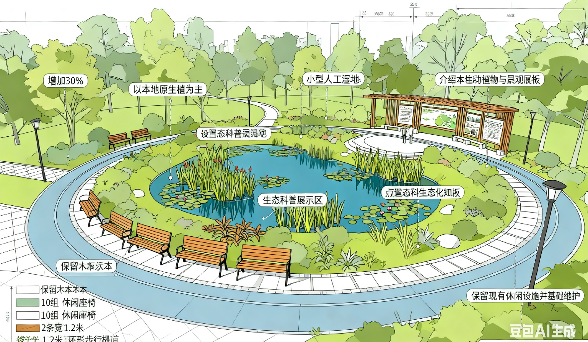
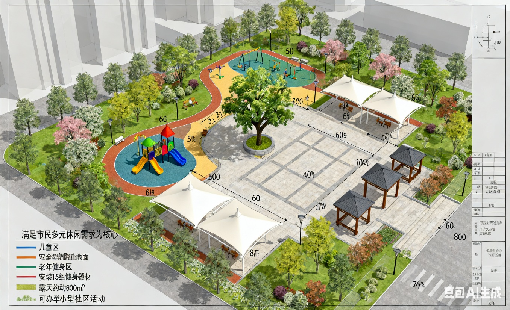

尊敬的参与者：
您好！欢迎参与本次关于AI治理反馈系统的学术实验研究。本次实验旨在探索政务AI反馈机制如何影响公民信任与集体行动，所有数据仅用于学术分析，将严格匿名化处理，保障您的隐私安全。
您将体验的“青川通办”平台，是青川市政府为实现“动态优化治理”而推出的新型AI系统。该系统通过智能算法收集市民对公共议题的意见、生成反馈信息，并助力政府动态调整治理策略，提升城市治理效率与市民参与度。
请您根据真实想法和感受完成后续任务，您的参与对本研究至关重要！
青川市计划对市中心某老旧公园进行翻新改造，目前拟定两种核心翻新方案，现通过“青川通办”平台广泛收集市民意见，以下是两种方案的详细说明：
重点提升公园生态环境质量，具体包括：增加30%绿植种植面积（以本地原生植物为主）、打造小型人工湿地（兼具生态净化与景观功能）、设置生态科普展示区（介绍本地动植物知识）；同时保留现有休闲设施并进行基础维护，新增10组木质休闲座椅和2条环形步行栈道（宽度1.2米）。

以满足市民多元休闲需求为核心，具体包括：新建儿童游乐区（配备安全塑胶地面与中小型游乐设施）、老年健身区（安装15组健身器材）、露天活动广场（面积约800㎡，可举办小型社区活动）；增设5个大型遮阳棚和8座休息凉亭；对现有绿化进行适度调整，保留核心景观树，扩大活动空间占比至60%。

请您认真阅读两种方案内容，接下来需提交您的选择及支持理由。
请根据您对两种公园翻新方案的理解，完成以下信息填写（*为必填项）：
当前字数：0 / 最少20字
尊敬的参与者，您提交的关于青川市公园翻新方案的意见已成功接收，以下是“青川通办”AI系统为您生成的定制化反馈信息：
请您认真阅读上述反馈信息，后续将基于此反馈开展相关测量。